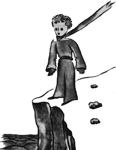
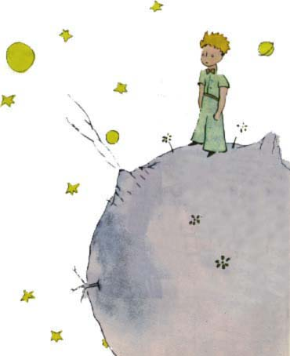

"Co to je za vìc?"
"To není vìc. To létá. Je to letadlo ... Moje letadlo."
A byl jsem hrdý, ¾e mohu øíci, ¾e létám. A tu zvolal:
"Jejda. Ty jsi spadl z nebe!"
"Ano," odpovìdìl jsem skromnì.
"Jé, to je divné..."
A malý princ se roztomile zasmál. To mì hroznì pohnìvalo. Chci, aby se mé nehody braly vá¾nì. Potom dodal:
"Tak ty taky pøichází¹ z nebe! Z které planety?"

Hned mi svitlo trochu svìtla do záhady jeho pøíchodu a rychle jsem se otázal:
"Ty tedy pøichází¹ z jiné planety?"
Neodpovìdìl mi. Zavrtìl mírnì hlavou a stále se díval na mé letadlo:
"Pravda, na tomhle jsi nemohl pøijít z moc velké dálky..."
A nadlouho se ponoøil do snìní.
Potom vyndal mého beránka z kapsy a zabral se do pozorování svého pokladu.
Dovedete si pøedstavit, jakou zvìdavost ve mnì probudila jeho zmínka o jiných planetách. Pokusil jsem se proto dovìdìt se o tom více.
"Odkud pøichází¹, èlovíèka? Kde je to tvé doma? Kam chce¹ odvést svého beránka?"
Na chvíli se zamyslil a pak odpovìdìl:
"Dobøe, ¾e jsi mi dal tu bedýnku, v noci to bude jeho domeèek..."
"Ov¹em. A bude¹-li hodný, dám ti také provázek, abys ho mohl ve dne pøivázat. A kolík."
Zdálo se, ¾e tento návrh malého prince zarazil.
"Pøivázat? To je ale podivný nápad!"
"Ví¹, kdy¾ ho neuvá¾e¹, pùjde, kam mu napadne, a ztratí se."
Mùj pøítel se znovu zasmál:
"A kampak by ¹el?"
"Kamkoli. Stále rovnì..."
Tu malý princ vá¾nì poznamenal: "To nevadí, u mne je to velice malé!"
A tak trochu smutnì dodal: "Kdy¾ jde èlovìk stále rovnì, daleko nedojde..."
